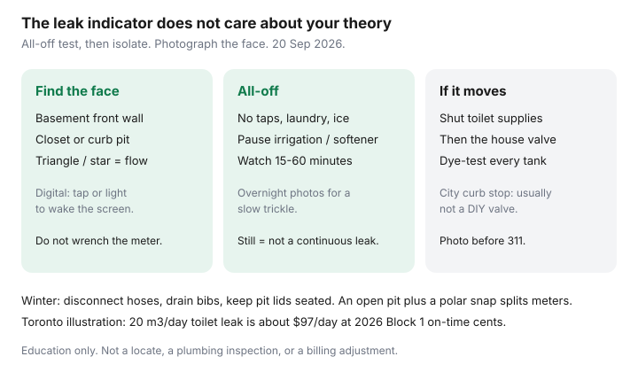

Utilities · Canada
How to run a water meter leak test at home in Canada
Mystery water bills go unpaid-or-disputed because nobody looked at the meter. The leak indicator does not care about your theory. If it moves with every tap off, something is using water — a toilet flapper, an irrigation valve, a softener, or a line you cannot see.
This is a practical Canadian how-to, including winter freeze notes. What to do with the litres sits in lower water and sewer bills. Toronto-specific line items and adjustment rules sit in Toronto water bills explained.
Disclosure: There is no natural affiliate product in a meter leak test. Saving Optimizer does not claim plumber or municipal partnerships. This is education — not a billing adjustment, a locate, or a plumbing inspection.
Key takeaways
- Find the meter: basement, utility closet, or a pit at the property line. The city owns the meter; you own the plumbing after it.
- All-off test: shut taps, ice-makers, washers, irrigation, and the softener if you can. Watch the leak indicator or the last digits for 15–30 minutes (longer if the face is slow). Movement = water is flowing.
- Toilets and irrigation clocks are the usual culprits. Dye-test every tank. A “silent” flapper can waste tens of m³.
- If the meter moves with everything off, isolate toilets and outdoor lines, then call a plumber and photograph the face for the city before you dispute.
- Winter: a meter pit lid left open, an uninsulated indoor meter, or a hose left on a bib is how you buy a split meter and a flood. Disconnect hoses before the first hard freeze.
Locate the meter and read analogue vs digital faces
Follow the main from the street or ask the utility where they last read it. Indoor meters are often on the front wall of the basement. Outdoor pits need the lid lifted carefully — watch for insects and a deep hole. Do not wrench the meter itself; that is the city’s property.
- Analogue (clock-style): a sweep hand and a small triangle, star, or gear that turns when water flows. That triangle is the leak indicator. Digits show m³ (or, in some older B.C. faces, imperial gallons or cubic feet — Vancouver still defines a “unit” as 2.8317 m³ / 100 ft³).
- Digital / encoder: a blank face until you shine a light or tap a button. Look for a leak icon or a flow-rate screen. Some need a magnet or the city’s handheld — if you cannot wake it, use the all-off plus a second read an hour later from the same angle.
- Write the digits, the date, and take a photo with the house number in the shot if you can. You want a before/after, not a vibe.

All-off leak test procedure and how long to wait
| Watch | If the indicator moves | Next isolate |
|---|---|---|
| 15 minutes | Obvious spinner — a running toilet or open hose | Toilet supplies, then outdoor shutoffs |
| 30–60 minutes | Slow flapper or a weeping valve | Dye-test every tank; pause the softener |
| Overnight photos | A trickle too small for a short watch | House valve after the meter; plumber if it still moves |
| Still after 60 minutes | No continuous leak large enough to turn the face | Compare m³ history; the spike may be usage or an estimated catch-up |
- Tell the house: no showers, no laundry, no dishwasher, no ice. Skip the test if someone will cheat.
- Shut the irrigation controller and any hose bibs. If you have a water softener or humidifier on a saddle valve, pause it if the manual allows a short bypass.
- Photograph the meter. Note the leak indicator.
- Wait 15 minutes for an obvious spinner; 30–60 minutes if you are hunting a slow toilet. A very slow leak may need an overnight read (bedtime photo vs morning photo) with no one using water.
- If the indicator is still, you do not have a continuous leak large enough to move the meter. A high bill may be usage, an estimated catch-up, or a past leak you already fixed.
- If it moves, start isolating (next section). Do not open the city curb stop unless the utility tells you to — that valve is how you flood the street or your basement.
Toilet flappers and irrigation as top culprits
Toronto Water’s leak page: a leaking toilet can waste 20 m³ (20,000 L) a day — about $97/day at the 1 Jan 2026 on-time Block 1 rate of $4.8629/m³. Dye-test every toilet: colour in the tank, no flush, 10–15 minutes, colour in the bowl means replace the flapper or the fill valve. Listen at night. A tank that refills itself is a bill.
Irrigation: a stuck zone, a broken head in the garden, or a backflow preventer that weeps. Shut the irrigation shutoff and repeat the meter test. Outdoor hose bibs: a split vacuum breaker or a hose left pressurized. Water softeners and reverse-osmosis drains can also cycle — pause them and retest.
What to do if the meter moves with everything off
- Shut the toilet supply valves. Retest. If the meter stops, you found the room.
- Shut the indoor main after the meter (house valve). If the meter still moves, the leak is between the meter and that valve — or the meter is the question. That is a plumber + utility call, not more dye.
- If the meter stops with the house valve shut, the leak is in the house. Work fixtures one at a time.
- Do not keep “watching it for a month.” Silent leaks are how four-figure bills happen.
Documenting for the city before a dispute
Cities charge for what the meter recorded. Adjustments, where they exist, want proof. Before you phone:
- Photos of the meter face (wide shot + digits) at start and end of the all-off test, with timestamps.
- A note of which fixtures you isolated and when the plumber came.
- The plumber’s invoice if you want a leak adjustment — Toronto asks for written confirmation the system is free of defects for some adjustment types.
- Your last 12 months of m³, not just the dollar line (equal billing / budget plans can hide a usage spike).
Ask for a re-read and whether the last bill was estimated. Stay polite; the call-centre script is not a court. Toronto’s bar (about 3× historical daily average, first-time rules, and other tests) is in the Toronto companion. Other cities publish their own.
Preventing freeze damage to meters and outdoor taps
A Canadian January will split a meter, a copper riser, or a hose bib that still has a garden hose attached. Disconnect hoses before the first hard freeze. Use the interior shutoff and drain the bib if you have one. Keep the pit lid seated; do not bury it under a snowbank you will salt into an ice cap. Indoor meters in an unheated crawl space need insulation that does not trap a leak against the wood — a plumber’s meter insulation kit, not random spray foam you cannot inspect.
If you are away, a neighbour who can shut the house valve is cheaper than a ceiling. After a freeze, do not assume the meter is honest until you run the all-off test again.
Sources & date stamps
- City of Toronto, Water leaks: costs & how to spot a leak — dye test; 20 m³/day illustration (used 20 Sep 2026).
- City of Toronto, Water rates & fees — $4.8629/m³ Block 1 on time, 1 Jan 2026.
- City of Toronto, High water bill & leaks — adjustment documentation ideas.
- Government of Canada, water / weather service pages — winter freeze context; not a municipal bylaw.
- Your municipality’s meter-location and emergency shutoff page — pit safety and who may operate the curb stop.
Frequently asked questions
Where is my water meter?
Often on the front basement wall, in a utility closet, or in a pit at the property line. The city owns the meter. Do not wrench it. Ask the utility if you cannot find the last read.
How long should I watch the meter?
15 minutes for an obvious spinner; 30–60 minutes for a slow toilet; overnight photos if you suspect a trickle and nobody will use water.
The triangle is spinning and every tap is off. Now what?
Shut toilet supplies and retest, then the house valve after the meter. If it still moves, call a plumber and the utility. Photograph the face first.
Can I shut the city’s curb stop myself?
Usually no — that valve is how you flood the street or the basement. Use the indoor house valve unless the utility tells you otherwise.
How do I keep the meter from freezing?
Disconnect hoses before the first hard freeze, drain outdoor bibs, keep pit lids seated, and do not leave an indoor meter in an unheated space without a proper insulation kit.